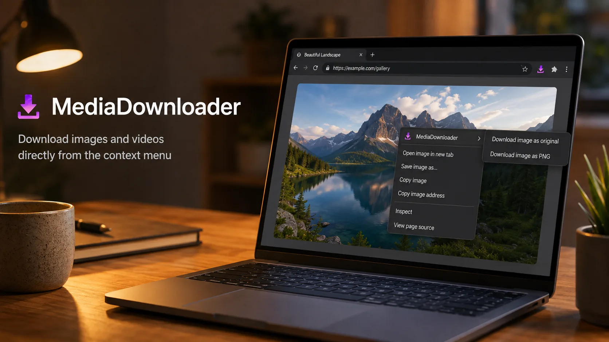
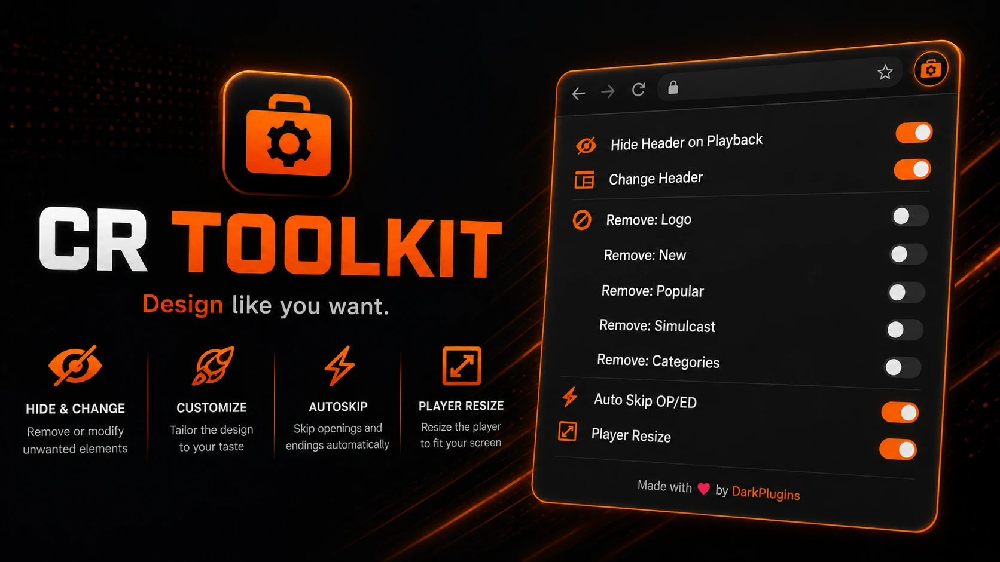
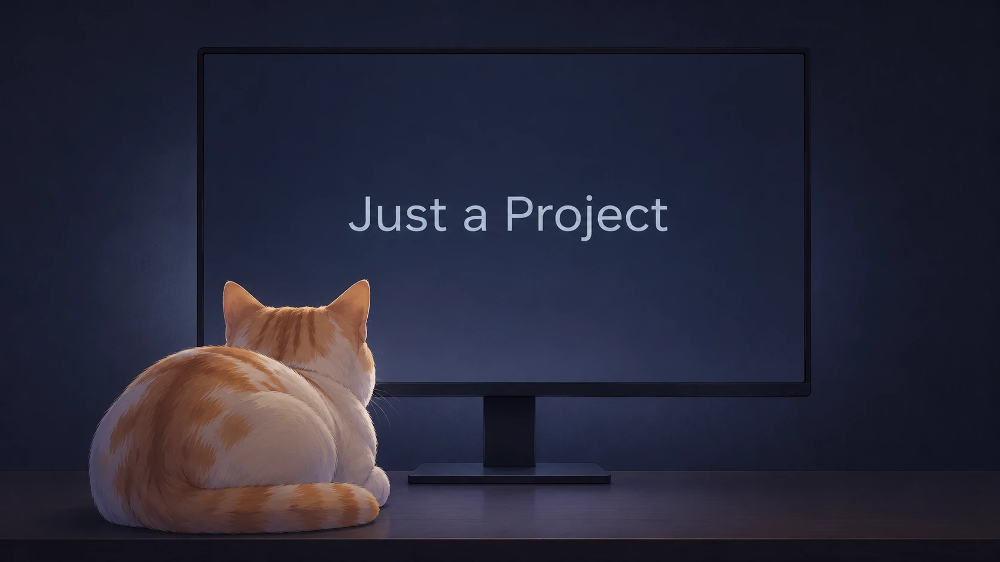
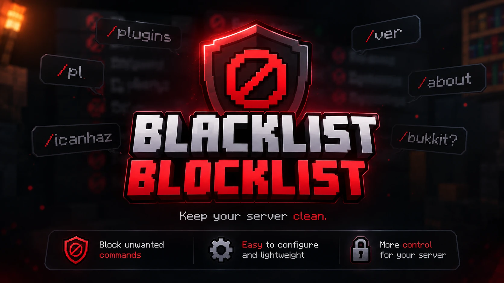
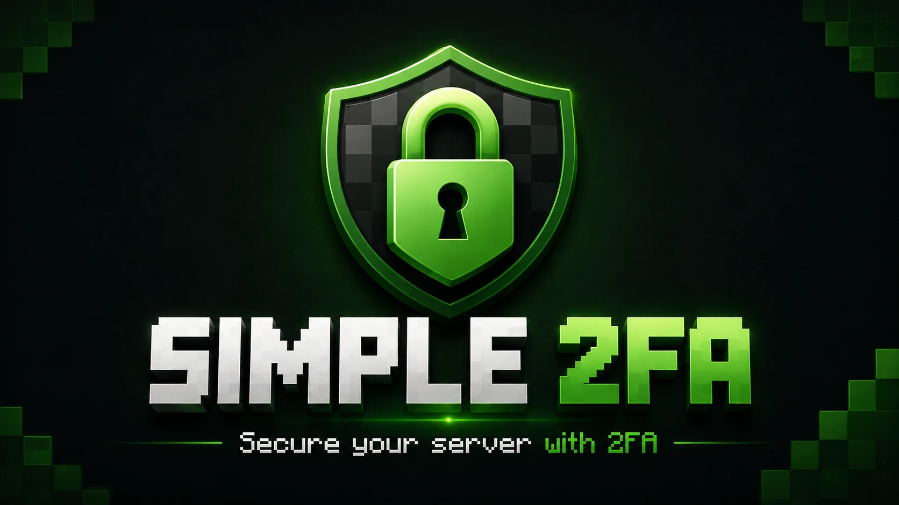
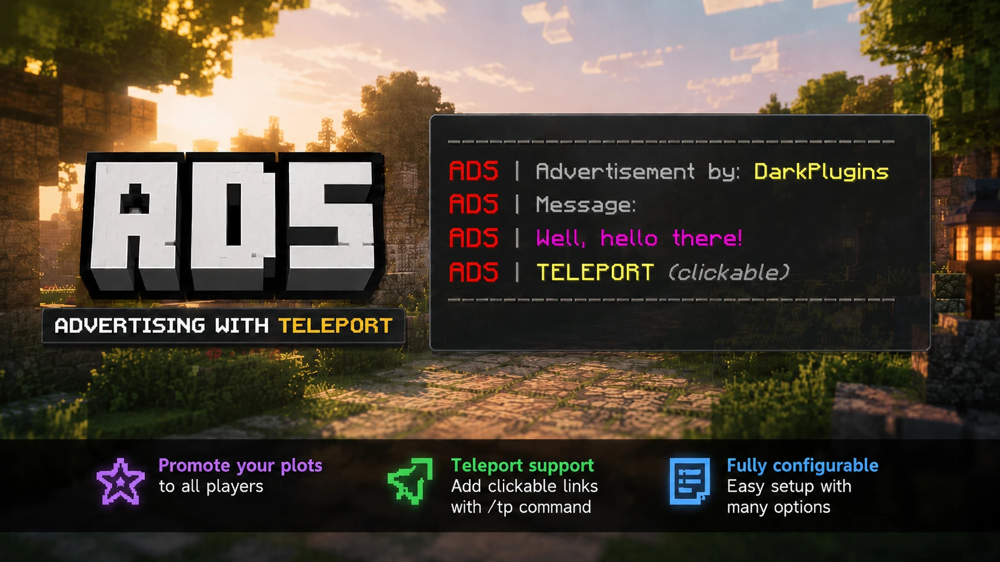
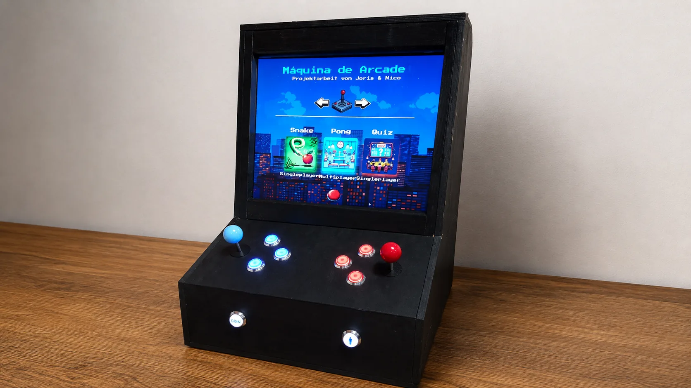

Zum Inhalt springen
Thema
Web & Erweiterungen

Fertiggestellt
TTVNotifyMeJavaScript · Browser-Erweiterung · Benachrichtigungen

Fertiggestellt
MediaDownloaderJavaScript · Browser-Erweiterung · Medien

Aktive Entwicklung
CR-ToolkitJavaScript · Browser-Erweiterung · Oberfläche

Fertiggestellt
FlipACoinJavaScript · HTML · CSS
Fertiggestellt
WebHTML · CSS · JavaScript

Fertiggestellt
BlacklistJava · Minecraft · Spigot
Noch nicht veröffentlichtAktive Entwicklung
RelevantCommandsOnlyJava · Minecraft · Tab-Vervollständigung

Fertiggestellt
2FAJava · Minecraft · Sicherheit
Noch nicht veröffentlichtAktive Entwicklung
VerifyBotJava · Minecraft · Discord · TeamSpeak

Fertiggestellt
AdsJava · Minecraft · Spigot · CityBuild
Thema
Prototypen & Hardware

Prototyp
GamesRadioStationPython · Raspberry Pi · Linux · Bluetooth

FertiggestelltQuellcode privat
ArcadeNode.js · HTML · CSS · JavaScript · Joystick-Integration
FertiggestelltQuellcode privat
EnergyAnalyzer 1.0C# · SMARD API · JSON · Desktop
✓
In die Zwischenablage kopiert